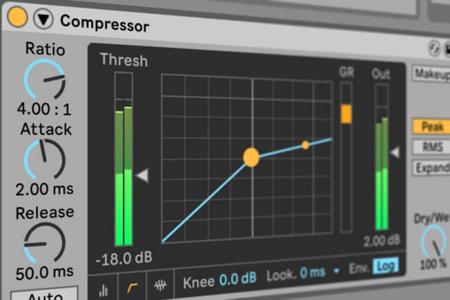

A compressor, put very simply, reduces the dynamic range (loudest and quietest points) of a signal. Reasons for using a compressor vary from having a signal that is far too dynamic to balance in a mix to simply reducing harsh peaks in a signal. Compressors can also be used to move audio completely out of the way of another element using a process called sidechaining which I will be posting an article on in the near future.
The main parameters to focus on when it comes to compression are:
Since compression is quite a broad topic of discussion, I’ll skip the tedious reading examples and continue right on to the video demo.